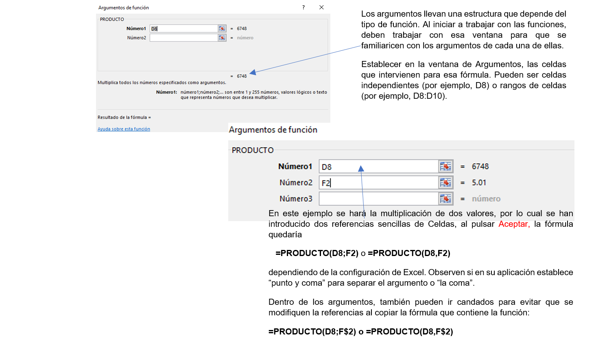

Uno de los elementos más importantes de Excel, es la utilización de fórmulas ya preestablecidas para agilizar el trabajo en las hojas de cálculo. Una Función es una fórmula predefinida que opera con uno o más valores y devuelve un resultado que aparecerá directamente en la celda o puede ser utilizada para calcular la fórmula que la contiene.
.
.
Por lo tanto, la sintaxis de cualquier función es:
nombre_función(argumento1;argumento2;...;argumentoN)
Todas las funciones siguen las siguientes reglas:
- Si la función va al comienzo de una fórmula debe empezar por el signo =.
- Los argumentos o valores de entrada van siempre entre paréntesis. No se debe dejar espacios antes o después de cada paréntesis.
- Los argumentos pueden ser valores constantes (número o texto), fórmulas o funciones.
- Los argumentos deben de separarse por un punto y coma (;) o coma (,) dependiendo de la configuración de Excel.
- Las fórmulas pueden contener más de una función, y pueden aparecer funciones anidadas dentro de la fórmula.
Ejemplo: =SUMA(A1:A4)/SUMA(B1:B4)
.
.
Existen muchos tipos de funciones dependiendo del tipo de operación o cálculo que realizan: funciones matemáticas y trigonométricas, estadísticas, financieras, de texto, de fecha y hora, lógicas, de base de datos, de búsqueda y referencia y de información.
En este listado, se observan algunas de las funciones que se pueden localizar en Excel.
Función Descripción Funciones matemáticas y trigonométricas ABS Devuelve el valor absoluto de un número POTENCIA Realiza el cálculo de elevar un número a la potencia indicada PRODUCTO Devuelve el resultado de realizar el producto de todos los números pasados como argumentos RAIZ Devuelve la raíz cuadrada del número indicado Funciones estadísticas MAX Devuelve el valor máximo de la lista de valores MIN Devuelve el valor mínimo de la lista de valores MEDIANA Devuelve la mediana de la lista de valores PROMEDIO Devuelve la media aritmética de la lista de valores CONTAR.SI Proporciona la cantidad de las celdas en el rango que coinciden con la condición dada. Funciones lógicas SI Devuelve un valor u otro, según se cumpla o no una condición Funciones Fecha y Hora AHORA Devuelve el número de serie correspondiente a la fecha y hora actuales AÑO Convierte un número de serie en un valor de año DIA Convierte un número de serie en un valor de día del mes HOY Devuelve el número de serie correspondiente al día actual .
A continuación, observamos ejemplos de establecimiento de Argumentos según Función.
